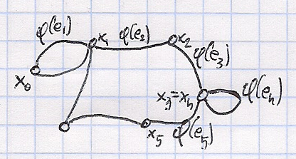

dowód
(2020-03-04)
\((d_1,...,d_n)\) - ciąg graficzny
\(\equiv (d_2', d_3',...,d_n')\) - graficzny, gdzie: \[
d_i =
\begin{cases}
d_i - 1: i = 2,..., d_1 + 1\\
d_i: i = d_1+2,..n
\end{cases}
\]
\(\upuparrows\)
dowód
\(d_1 = 3\)
rzędy wierzchołków: \(d_2 - 1\)
\(d_3 - 1\)
\(d_4 - 1\)
\(d_5 - 1\dots\)
dołączamy do każdego z powyższych dodatkowy węzeł:
havel hakimi

dowód-1
\((3,2,2,2,1)\)
\((2,1,1,0)\)
\((3,2,2,2,1)\)
\((1,1,1,1)\)
\(\mathcal{N}(x) = \{ y \in V: (\exists e \in E)( \{x,y\} \in \phi(e) ) \}\)
\(\{ \deg(y): y\in \mathcal{N}(1) \} = \{ d_2, d_3,..., d_{d_1 +1} \}\)
Zał. że nie
Jest \(x \in \mathcal{N}(1)\) takie, że \(\deg(x) < \deg(d_{1+d_1})\)
\(d_1 = 4\)

havel hakimi
\(v_4 \leftarrow\) lipny, taki, że \(\deg(v_4) < d_{1 + d_1}\)
Jest \(y\) taki, że 1. \(y \notin \mathcal{N}(1)\) 2. \(\deg(y) > \deg(v_4)\)
Jest \(z\) taki, że 1. \(z \in \mathcal{N}(y)\) 2. \(z \notin \mathcal{N}(v_4)\)

havel hakimi
\(G'\): 1. \(\deg(1) = \deg_6(1) = 4\) 2. \(\mathcal{N}(1) = \{ v_1, v_2, v_3, y \}\)
2'. \(\deg_{6'}(y) = \deg_6(y)\) 3. \(\sum_{u \in \mathcal{N}(1)}\deg(u) ? \sum_{u \in \mathcal{N}(1)}\deg_G(u)\)
Czyli jest graf \(G\) na \(\{ 1,...,n \}\) taki, że: 1. jego \(\deg\), to \((d_1,...,d_n)\) 2. \(\mathcal{N}(1) = \{2,3,...,d_1+1\}\)
\(\deg(i) = d_i~dla~i =2,...,d_1+1\) \(\blacksquare\)


zoo 3
\(K_{n,m} = (X\cup Y, \{\{x,y\}: x \in X, y \in Y\})\)
\(|X| = n, |Y| = m\)
Mamy \(G(V,E)\)
petersena
\(\forall x \in V~~deg(x) =3\) jest to graf regularny \(\equiv (\exists c)(\forall x \in V)(\deg(x) = c)\)
graf kubiczny \(\equiv\) 3-regularny
Niech \(G = (V,E)\) będzie grafem prostym.
Grafem krawędziowym grafu \(G\) nazywamy \[
L(G) = (E, \{\{L,K\}\in [E]^2: L\cap K \neq \emptyset\})
\]

krawędziowy przykład
\(L(K_3) \underset{IZO}{\cong} K_3\)
Konstrukcja:
Tu mamy \(\binom{5}{2} = \frac{5~\cdot~4}{2} = 10\) krawędzi. - \(L(K_5) = \left(\{0...4\}^2, \left\{\{A,B\}\in\left[\left[0,4\right]^2\right]^2: A\neq B \land A \cap B \neq \emptyset\right\}\right)\) - \(\overline{L(K_5)} = \left(\left\{\{0...4\}^2: \left[\left\{0...4\right\}^2\right]^2: A \neq B \land A \cap B = \emptyset\right\}\right)\) - Fakt: \(L(K_5) \underset{IZO}{\cong}\) graf Petersena
\(H_n = (\{(i_1,...,i_n): i_1,...,i_n \in \{0,1\}\}, \{\{\overline{x}, \overline{y}\}:(\exists i)(\overline{x}(i) \neq \overline{y}(i)\land (\forall j)(\overline{x}(j) = \overline{y}(j)))\})\)
\(n = 3\) \((i_1, i_2, i_3)\)
\(H_2\)
\(H_3\)

hiperkostka
Ustalmy graf \(G=(V,E,\phi)\) 1. Trasa w grafie \(G\) - ciąg \(x_0e_1x_1e_1...x_ne_n\) taki że - \(x_0,...,x_n \in V\) - \(e_1,...,e_n \in E\) - \(\{x_i, x_{i+1}\} = \phi(e_{i+1})\) \(i = 0...(n-1)\) -  2. Ścieżka: trasa bez powtórzonych krawędzi 3. Droga: ścieżka bez powtórzonych wierzchołków 4. Cykl: ścieżka taka, że \(x_0 = x_n\) 5. Cykl elementarny: \((x_0x_1...x_{n-1}x_n) = x_0\) przy czym \((x_0x_1...x_{n-1}x_n)\) to jest droga
Nazewnictwo: | \(\equiv\) | \(\equiv\) | \(\equiv\) | | -------- | -------- | ----------------- | -------------- | | trasa | trail | droga | trasa | | ścieżka | walk | droga prosta | ścieżka | | droga | path | droga elementarna | ścieżka prosta |

fakt trasa droga
Mamy graf \(G=(V,E, \phi)\).
Na \(V\) określamy relację:
\(x \sim y \iff\) kiedy istnieje droga od \(x\) do \(y\)
Fakt: \(\sim\) jest to relacja równoważności
Terminologia: składowe spójne \(\equiv V_{/\sim}\)
\(c(G) = |V_{/\sim}|\)
\(G\) jest spójny \(\equiv\) \(c(G) = 1\)
Niech \(G=(V,E)\) będzie grafem prostym.
Jeśli \(G\) jest spójny to \(|E| \ge |V| - 1\)

twierdzenie
\(n=1\) \(\rightarrow\) OK
\(n=2\) \(\rightarrow\) OK
Załóżmy, że dla grafów takich, że \(|V| = n\) to jest OK
Niech \((V,E)\) będzie spójny, \(|V| = n+1\) ale \(|E| < |V| - 1 = (n+1) -1 = n\), czyli \(|E| \le n-1\)
Załóżmy, że \((\forall x \in V)(\deg(x) \ge 2)\)
\[ (n+1)*2 \le \sum_{x\in V}\deg(x) = 2|E| \le 2(n-1) \]

twierdzenie dowód
\(V_1 = V \setminus \{x\},~|V_1| = n\)
\(G_1 = G \setminus \{x\}\) \(\leftarrow\) spójny